机器学习书：以高中数学视角
🏗️施工中
内容还在早期阶段，正在完善中。
⚠️ 警告
内容还没有经过完整审核，可能存在错误。
⚠️ 警告
内容可能包含部分私有内容，如有侵权请联系作者。
谨以此书，献给我的大学三年。
by KevinZonda
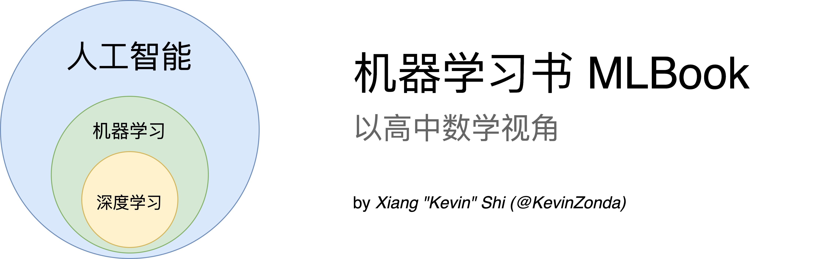
而在这里将更关注于机器学习中基础的数学和理论。相信学完，你可以获得对机器学习有基础理解。当然，在这个模块中，读者并不期望拥有高深的数学知识，只期望你能够理解以及能够运用高中数学知识。
本读物核心框架基于英国伯明翰大学本科课程 LC Artificial Intelligence 1 (06 34238)、LI Artificial Intelligence 2 (06 34255)、LH Machine Learning (06 38965)、LH Neural Computation (06 32167) 得来。内容并不完全重合。
适用于伯明翰大学学生的标签
由于整本书关联于伯明翰课程，因此我们也为方便伯明翰计算机科学本科与硕士学生，增加了如下标签：
其中蓝色与LC指本科第一年课程。绿色与LI指本科第二年课程。红色与LH指本科第三年课程。对于硕士级别课程 LM，其需要学习全部等级的内容（取决于你是 ACS 还是 CS）。
感谢列表
- @PassingWang：审计者（可读性）
- @George-Miao：审计者（数学）
符号表
不同的人有不同的符号标记，而在这节中，我们将会介绍本读物一些常见的符号标记。
基础运算
| 符号 | 含义 | 符号 | 含义 |
|---|---|---|---|
| 连加 | 连乘 | ||
| 最大值 | 最小值 | ||
| 最大值的参数 | 最小值的参数 | ||
| 自然对数（对 ） | 自然对数 | ||
| 指数函数 | 开方 | ||
| 分数 | 绝对值 |
集合
| 符号 | 含义 | 符号 | 含义 |
|---|---|---|---|
| 实数集 | 自然数集 | ||
| 整数集 | 有理数集 | ||
| 正实数集 | 正自然数集 | ||
| 属于 | 不属于 | ||
| 子集 | 真子集 | ||
| 并集 | 交集 | ||
| 空集 | 集合的基数（集合的长度） |
条件与逻辑
| 符号 | 含义 | 符号 | 含义 |
|---|---|---|---|
| 对于所有 | 存在 | ||
| 可以推导出（充分条件） | / | 等价（充要条件） |
导数
| 符号 | 含义 | 符号 | 含义 |
|---|---|---|---|
| 函数 对 的导数 | 函数 对 的二阶导数 | ||
| 对 求 的偏导数 | |||
| 函数 位于 的梯度 | 函数 位于 的海森矩阵 |
线性代数
| 符号 | 含义 | 符号 | 含义 |
|---|---|---|---|
| 实数 | 矩阵 | ||
| 向量 | 矩阵 的第 行 | ||
| 向量 的第 个元素 | 矩阵 第 行 第 列的元素 | ||
| / | 第 个向量 | 矩阵 第 列 | |
| 向量 的膜（几何长度） | 向量 的膜（几何长度） | ||
| 向量 的转置 | 矩阵 的转置 |
概率
| 符号 | 含义 | 符号 | 含义 |
|---|---|---|---|
| 事件 的概率 | 在事件 发生的条件下，事件 发生的概率 | ||
| 事件 和 同时发生的概率 | 事件 和 至少有一个发生的概率 | ||
| 事件 和 同时发生的概率 | |||
| 随机变量 的期望 | 随机变量 的方差 | ||
| 标准差 | 方差 | ||
| 均值 | |||
| 随机变量 服从概率分布 | 正态分布 | ||
| 随机误差 |
机器学习中的特定缩写
| 缩写 | 含义 | 缩写 | 含义 |
|---|---|---|---|
| 数据集 | 输入空间 | ||
| 输出空间 | 权重 | ||
| 输入数据 | 输出数据 | ||
| 预测数据 | 函数 | ||
| 学习率 |
缩写
| 缩写 | 含义 | 缩写 | 含义 |
|---|---|---|---|
| subject to | 换句话说 | ||
| with respect to/关于 | 例如 | ||
| independent and identically distributed/独立且同分布 |
Chapter 1
机器学习基础
高中数学回顾
在这一节，我们将尝试解释为接着学习机器学习所需要的基础数学概念。你可以尝试先跳过这一节，在遇到不会 的数学概念，再回头看看，或许可以达到更好的效果。
这一届将假设你已经拥有基础的数学认知：即我们假设你完成了中国高中的数学课程。你无需担心如果你不是理科 生而可能少学了些数学而难以前进，因为我们将只依赖如下几点：
- 求和
- 求积
- 导数
- 对数（的基础概念和运算）和
- 函数的基本定义
我会在依赖以上知识点的情况下完善机器学习所需要的数学。
求和
连续求和我们通常使用 来表示，例如：
下侧的 表示求和的起始位置，上侧的 表示求和的终止位置。在这个例子中，我们将 从 求和到 。
求积
连续求积我们通常使用 来表示，例如：
和求和运算类似， 下侧的 表示求积的起始位置，上侧的 表示求积的终止位置。在这个例子中，我们将 从 连乘到 。
导数
TODO
偏导
对数
对数常使用 ，作为标记。在机器学习中，我们可能会将 与 等混淆，但是不用担心，我们 通常只是想方便计算。
我们知道的一些对数运算的基础公式：
其中最有重要的是 。其揭示了对数运算最重要的性质：对数可以使乘法转化为加法。
因此如果我们考虑我们需要连续乘 次乘数 ，其中 表示不同的乘子，我们可以使用 来简化计算：
乘法运算对于计算机是很慢的，而加法运算是很快的。因此我们可以使用对数来简化计算。
于此同时更重要的是在计算多次概率 的乘积时，其结果可能是一个非常非常小的数（考虑 ，而计算机在存储小数时，可能会有精度丢失（也就是会不准确），而越小的数，精度可能丢失的越快。我们称这种问题为下溢出（underflow）。考虑对数可以将小数相乘转化为相加，从而避免了下溢出的问题 。
函数的基本定义
在初中和高中，我们对于函数的定义：函数是对空间中的元素进行映射（mapping）。
如果我们定义输入空间为 ，输出空间为 ，我们可以将函数 看作是一个对 到 的映射，用符号我们记做 。
举个例子，对于普通的一元一次线性函数 ，我们可以将其看作是将输入空间（即定义域，）中的元素映射到输出空间（即值域，）中的元素。因此可以记作 。
在机器学习中，我们通常将函数看作是一个模型，即我们希望找到一个函数 ，使得 能够将输入空间 中的元素正确映射到输出空间 中的元素。
2. 监督学习
我们在这一节将主要关注传统机器学习中的监督学习，包括线性回归、逻辑回归等。这些算法是机器学习中最基础的算法，也是很多其他算法的基础。
2.1 线性回归
什么是线性回归
线性回归（Linear Regression）是一个机器学习模型用于完成回归任务。为解释线性回归，我们将其分为两个部分：线性和回归。
[https://simple.wikipedia.org/wiki/Linear_regression#/media/File:Linear_regression.svg]

上图是线性回归的一个演示图。我们可以看到有很多点，和一根线。这根线就是我们的线性回归模型。我们称之为其是我们的假说。而这些点就是我们的数据集。我们的目标是找到一根线，使得这根线可以最好的拟合这些点（或者说，更好地服从数据点的趋势）。而用线去拟合这些点，我们就称之为回归。
而线性（Linear）则是指这个模型是一个线性函数（Linear function），其可以被定义为：
其中 是一个 维的向量， 是一个 维的向量， 是 的第 个元素， 是 的第 个元素。而 是我们的线性函数，其可以将输入 映射到一个标量值。
我们可以简易的认为对于输入的每一个特征 ，我们都会有一个权重 ，而我们的线性函数就是将所有的特征乘上对应的权重后相加，再加上一个偏置 。而这个线性函数就是我们的线性回归模型。
用一维的例子解释，即考虑一维线性函数 ，我们可以将其改写为 ，其中 ， 是偏置。而对于多维的情况，我们可以将其改写为 。
如果我们假设 ，并令 则我们可以认为
更严格的定义
我们假设输入数据是一个 维向量 ，而输出数据是一个标量 。向量我们可以认为一个有 个数字的数组，而标量则是一个单独的数字。用数学语言，我们可以定义输入空间 为一个 维的实数空间，而输出空间 为一个实数空间。即：
而我们的线性函数 可以被定义为是从输入空间 到输出空间 的一个映射，即：
我们需要从数据集尝试寻找参数使线性函数能够最好的拟合。我们可以定义数据集为：
即数据集是由 个数据点组成，每个数据点包含一个输入 和一个输出 。而我们的目标是找到一个权重 ，使得我们的线性函数 能够最好的拟合数据集 。
成本函数
那我们应该如何去寻找到最终最佳的呢？我们需要定义一个函数，叫损失函数。其用于衡量我们的预测值与真实值之间的差距。如果我们能通过某些手段最小化这个损失函数，我们也就相当于让模型可以学习到最佳的。这个过程就是我们所说的训练过程。
而线性回归模型的损失应该怎么定义呢？相信聪明的朋友已经知道了！我们可以通过计算预测值与真实值之间的差距来定义损失函数。我们可以考虑 与模型预测的 的距离，即 。
如果我们的模型预测的值与真实值之间的距离越小，那么我们的模型就越好。因此我们可以定义距离函数为这两个点的几何距离，即欧式距离：
其中我们将其转化为平方的形式，是因为平方相比于绝对值更容易求导，而且在求导的时候也不会受到绝对值的影响。
而上述式在最后进行平方根运算，而我们在求导的时候会遇到开方的问题，这会使得我们的求导变得复杂。因此我们可以将其转化为平方的形式，是因为平方相比于开方更容易求导，而且在求导的时候也不会受到开方的影响。而其与几何距离函数有着相同的单调性，这也意味着我们可以通过最小化平方距离 来最小化几何距离。
因此我们可以定义距离函数为：
而考虑上式只考虑了一个样本，而我们的数据集中有多个样本，因此我们需要对所有的样本求平均值以得到平均损失。因此我们可以定义损失函数 为：
因此目前我们尝试寻找一个权重 ，使其最小化成本函数 为了方便后面的数学操作，我们可以将整个函数除以2，这样在后续求导的时候可以消去2，方便计算。而考虑乘上是一个正的常数，不会影响其的单调性与求导，也不会影响最小化这个式子的权重，因此我们可以将目标函数改写为
优化目标函数
在完成问题的定义后，我们的目标转化成了最小化成本函数。在高中数学中，我们可以知道：一个函数的极值点只存在于导数为 0 的点。因此如果我们想获得一个参数使损失函数最小化，我们可以对成本函数求其求导数（更严谨来说，是对于成本函数的参数求偏导）。
请允许我跳过对于该损失函数的极值点是全局最低点的严格证明。简洁来说，对于一个凸函数（convex function），其的全局最小值会出现在其导数为 0 的情况（需要注意的是，凸函数可能会有多个点使其导数为 0，且这些点的函数值均为全局最小值）。而我们的成本函数可以被证明为凸函数，因此我们可以通过对其求导数来获得全局最小值。我们会在后续章节讨论凸函数的性质。
求其极值点。令其偏导值为 0:
通过上述操作，我们可以获得最佳的，这个过程就是我们所说的训练过程。我们可以通过这个过程来训练我们的模型，使得模型可以学习到最佳的，从而可以对未知的数据进行预测。
由于我们可以通过代数直接获得函数的解析解，我们也称其为封闭解（Closed-form solution）。
需要注意的是并不是所有的问题都拥有封闭解，有些问题可能会有多个解，有些问题可能会有无穷个解，有些问题可能会没有解。而应对这种情况，我们会选择使用迭代的方法来求解（我们又称其为优化（Optimisation））。在后续的章节中，我们会介绍如何使用迭代的方法来求解线性回归问题。
2.2 梯度下降 Gradient Descent
在上一节，我们通过线性回归了解了基础的监督学习的模型。我们定义了模型，成本函数，并尝试优化成本函数。优化成本函数使得我们的模型能够更好地完成任务（拟合数据）。在这一节，我们将介绍一个常用的优化算法：梯度下降（Gradient Descent）。其是一种更通用的方法用于最小化函数。
1. 梯度下降
初中和高中数学告诉我们，一个函数的斜率（即一阶导数）表示了函数的变化率。如果一个函数的斜率为正，那么函数在这一点上是递增的；如果一个函数的斜率为负，那么函数在这一点上是递减的。用表格来说就是：
| 极大值 |
对于极小值：
| 极小值 |
梯度下降算法正是利用了这一点，通过不断地迭代，使得函数的值不断地减小。
我们假设我们需要寻找函数 的最小值，并且其的最小值与其的极小值重合。我们对其位于 进行求导。因此我们可以得到三种情况：，，。
我们使用图像来表示这三种情况。其中红线表示函数 ，蓝线表示导数 。
情况 ： 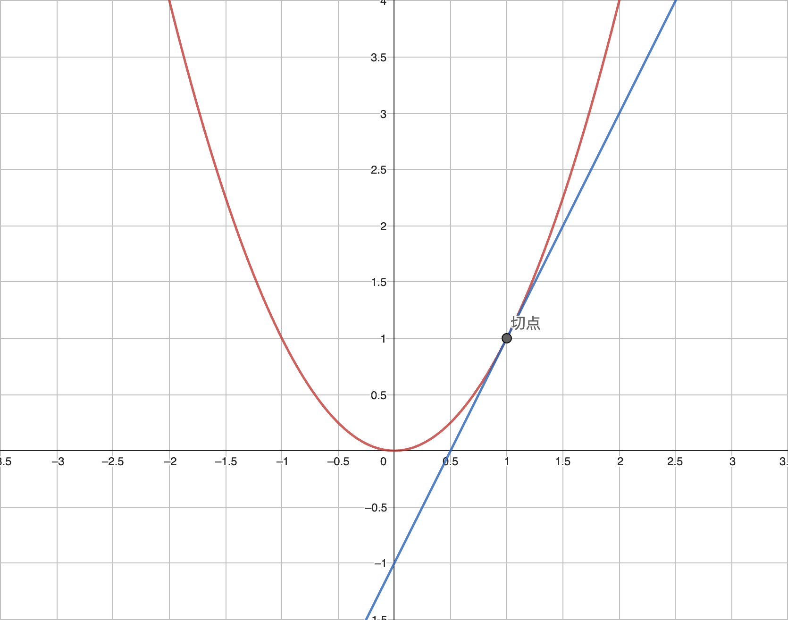
在这种情况下，导数大于 0。如果向右走，则函数的值增大，因此我们需要向左走。
情况 ： 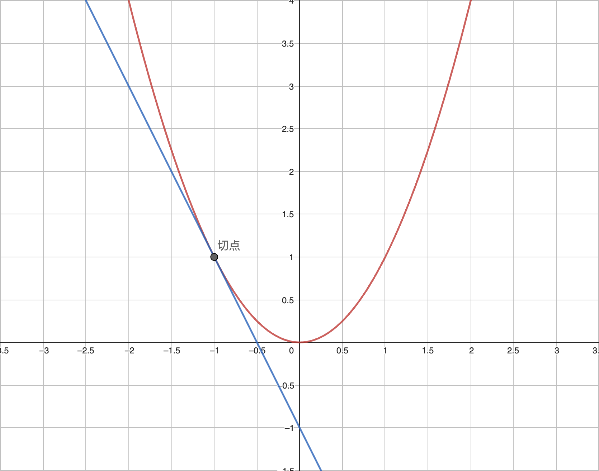
在这种情况下，导数小于 0。如果向左走，则函数的值增大，因此我们需要向右走。
情况 ：
在这种情况，我们已经到达了极值点。
经过上述实验，我们会发现函数极小值方向总是相对于当前位置的导数相反。即如果导数为正，我们需要向左走；如果导数为负，我们需要向右走。因此我们得到了梯度下降的更新公式：
其中 为学习率，其控制了我们每次更新的步长。越大的学习率，我们的步长越大，但是可能会导致我们错过最小值；越小的学习率，我们的步长越小，但是可能会导致我们收敛速度过慢。
如果考虑函数 为多变量函数，我们则需要使用偏导替换导数。因此我们可以得到：
但是考虑我们的参数 可能是一个向量，我们需要对每一个维度进行更新。因此我们可以得到：
我们定义梯度 为：
则我们可以得到最终的更新公式：
疑问
相信看到这的时，你一定有很多困惑。我将先解释几个最常见的问题。
Q: 如果我的函数极值点不是唯一的，梯度下降会怎么样？
梯度下降会收敛到一个局部最小值（即极值点）。这是因为梯度下降是一种贪心算法，其只会考虑当前的梯度，而不会考虑全局的梯度。
而解决的方法通常是一个叫“多次启动”的东西。其的做法是随机初始化参数，然后运行梯度下降。重复这个过程多次，然后选择最小的那个值。
Q: 如果我学到了极大值咋整？
在上述我们还有一种可能就是直接学习学到了 且这个点是 的极大值。这种情况通常建议去买个彩票（x）。使用多次启动可以解决这个问题。
Q：什么情况下梯度下降会失效？
梯度下降的一个前提是函数是可微的。如果函数不可微，梯度下降会失效。另外，如果函数的梯度变化很大，梯度下降也会失效。这种情况下，我们可以使用其他的优化算法，例如 IRLS。
Q：什么情况下梯度下降一定会收敛到最小值？
如果函数是凸函数，梯度下降一定会收敛到最小值。这是因为凸函数的局部最小值就是全局最小值。
（这个答案对欧皇无效）
原理：梯度下降为什么总是能走向最深的点
梯度下降的本质推导来源于泰勒展开。泰勒展开是一个非常重要的数学工具，它可以将一个函数在某一点附近用一个多项式来近似表示。泰勒展开的公式如下：
其将函数在 处使用多阶导数展开，展开的多项式的次数为 。换句话说如果我们一级展开，我们则需要使用 0 阶导数（函数值）和一阶导数（斜率）；如果我们二级展开，我们则需要使用 0 阶导数 （函数值）、一阶导数 （斜率）和二阶导数 （曲率，或者说，导数的导数）以此类推。
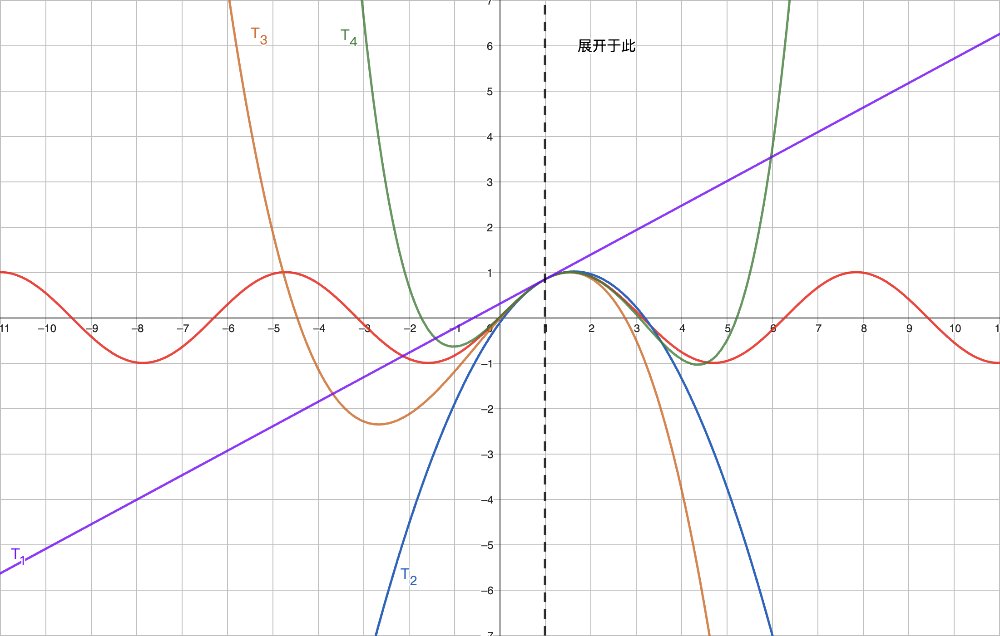
上图是对函数 位于 的泰勒展开。其中红线为原函数，紫线为一阶泰勒展开，蓝线为二阶泰勒展开，橙线为三阶泰勒展开，绿线为四阶泰勒展开。我们可以看到，随着泰勒展开的次数增加，展开的多项式越接近原函数。
通过上图，我们也能发现泰勒展开的两个非常有用的性质：
- 当我们需要拟合的点 离展开点 越近，泰勒展开后的结果 越接近原函数的值 。
- 当泰勒展开次数越高，拟合的效果越好。
我们假设 为损失函数，我们认为 为最优权重。我们期望从 达到最优权重 。我们对损失函数 位于 进行一阶泰勒展开，即：
如果我们认为更新后的权重 是 增加一个单位向量 伴有学习率 ，则可以写成
我们可以将上式代入到损失函数的泰勒展开中，得到：
我们可以认为 是损失函数在 处的梯度与更新的方向 的点积。
其中 是 与 的夹角。
考虑单位向量 ，其的膜长为1，即 。因此我们可以得到：
如果假设 的膜长不变，则其的点积越大，说明 越小，也就是说我们的更新方向越接近于梯度的方向。
根据三角函数的定理，我们可以地到 ，其最小值当且仅当 时取到，而其最大值则为 时取到。因此我们可以得到：
我们的目标是使 最小化，也就是说我们希望 最小化。因此我们可以得到结论：当 与 的夹角为180°（即 ）时， 取得最小值。即 与 反向时， 取得最小值。
考虑 为 的反向，且为单位向量我们可以得到：
将其代入至原函数：
考虑 是一个标量，我们可以令 ，则可得：
因此我们可以证明出最终的结论：梯度下降总是能走向最深的点。
拓展：IRLS
如果将泰勒展开展开至二阶，则有
令其导数为0，我们可以得到
即在二阶泰勒展开中，我们认为损失函数 的最低点可以由 得到。而 可以看作是 的更新方向。
因此我们可以定义新的梯度下降函数为
其中 为 Hessian 矩阵， 为 Hessian 矩阵的逆矩阵。
TODO
我们将新的更新公式命名为 IRLS（Iteratively Reweighted Least Squares）算法。其是一种迭代的最小二乘法，其在每次迭代中都会重新计算权重。
2.3 线性回归与梯度下降
在 2.1 节，我们定义了线性回归的优化目标为：
在 2.2 节，我们了解了梯度下降：其可以通过函数的一阶导数来更新参数，使得函数值逐渐逼近最小值。因此在这一节，我们可以通过对线性回归的优化目标求导来得到梯度下降的更新公式。
应用梯度下降
我们定义目标函数函数 为：
我们将其带入梯度下降的公式中：
其中 为学习率， 为梯度算子。我们可以通过不断迭代上述公式来更新权重 ，使得目标函数逐渐逼近最小值。
在实际应用中，我们可以通过设置迭代次数或者设置阈值来终止迭代。其代码类似于
const MAX_INTERATION = 1000
w = initWeight()
for (i := 0; i < MAX_INTERATION; i++) {
w = w - eta * gradient(w)
if stopCondition(w) {
break
}
}
2.4 逻辑回归
在学习完线性回归后，我们来学习逻辑回归。逻辑回归（Logistic Regression）是一种二元分类（Binary Classification）算法。分类算法故名思议就是将数据分为不同的类别。而二元则是表示分的类别总共由 2 个，我们可以将其命名为正类（Positive）和负类（Negative）。
定义问题
我们定义正类的标签 ，负类的标签 。因此我们可以定义数据集为：
理想情况下我们的模型接受输入一个向量 ，输出一个其所属的分类 。换句话说，我们想要寻找一个模型 。
而对于直接输出一个类别，是很困难的。因此我们可以尝试输出一个概率值，用于表示样本属于正类的概率。这样我们可以通过设置一个阈值来判断样本属于哪个类别。因此我们将问题转化为：寻找一个模型 。
逻辑回归被定义为一个线性模型，线性函数被定义为：
从线性方程获得概率
想从一个线性方程 获得一个概率 需要一些魔法操作，这是因为我们可以认为线性方程接受一个向量 并输出一个实数 ，而概率的定义域为 并不相同。我们需要一些额外操作来实现。
我们假设正类的概率为 ，负类的概率为 。考虑我们只进行二元分类，因此我们可以认为：
我们定义正负比 ，即正概率和负概率的比值为：
我们可以将 转换为对数形式，即 函数：
如果我们将 记为 且令 为 ，则有：
考虑到 函数的定义，其输出值为实数域 （即 ），考虑其和线性模型输出空间一致，因此我们可以把这两个函数的输出进行拼接：
即如果线性函数的输出能学习到 函数的输出，那么我们就可以得到一个概率值。
我们定义下列函数为 Sigmoid 函数：
则我们可以将 表示为：
因此我们可以定义我们最终的模型为：
其中 为 Sigmoid 函数。
这个模型接受一个向量 并输出一个分类为正类的概率值。
定义优化问题
定义完了这个模型该怎么算，我们该想想我们怎么去优化这个函数。对于逻辑回归，我们可以使用一个名为极大似然估计法的技术来优化这个函数。
考虑我们的数据集分为两类，即标签为正的数据集和标签为负的数据集。我们先从标签为正的数据集开始：
考虑这些标签为正，因此我们希望对于所有的标签，我们的模型输出的概率值越大越好。即我们可以尝试最大化所有正标签点的概率：
我们使用 函数来将其转换为求和形式：
考虑这些点 ，而其余点 ，因此我们可以将其改写为：
在此公式，对于所有负标签点 （），其在上式中的项会变成： ，即其对于上述式子并不会有什么影响。
而对于负样本，我们希望其被分类为负类的概率越大越好。而负标签的概率被定义 ，因此我们可以将其改写为：
与正样本类似，我们可以改写当前式为：
和正样本类似，对于正样本点 （），其在上式中的项会变成： ，即其对于上述式子并不会有什么影响。而对于负样本点，其 ，其在计算中的 会变成 ，因此其对于上述式子会有影响。
于是我们可以将优化问题定义为：
由于在机器学习中，我们更擅长最小化问题（我们有梯度下降，可以轻松优化最小化问题），因此我们可以将其转换为最小化问题：
在此我们定义 为损失函数，即：
我们使用梯度下降优化这个损失函数，以获得最佳的参数 ：
伯努利视角
TODO:
2.5 非线性变换
在学完线性回归和逻辑回归后你一定会有一个疑问，我们既然定义模型为线性函数，而线性函数中所有的输入特征都是线性的，那么我们如何处理非线性的特征呢？例如我们应该如何用线性模型来拟合一个二次函数呢？
非线性变换可以解决这个问题。
定义
我们可以通过对输入进行一定变换从而使得原本的线性特征变成非线性特征。
我们定义一个变换函数 ，将原本的 维特征转换为 维特征。我们可以将原本的特征 通过 映射到更高维的空间 ，然后使用线性模型拟合 。
最简单的例子是对于输入空间 ，即 ，我们可以定义一个二次变换函数 ，然后使用线性模型拟合 。
通过这种映射，我们可以拟合很多非线性函数。
一些其他的变换例子是：
代价
We take the benefit, we pay the price.
非线性变化允许我们拟合更多的函数，但是也有一些代价。
升高输入维度同样也会导致升高权重的维度。例如
我们原来只需要 3 维的权重，而现在需要 6 维的权重。这会导致更多的计算量。
而最严重的则是权重爆炸。当我们的特征空间变得非常大时，我们的权重也会变得非常大。模型过度复杂会导致过拟合（模型只记住了数据集的点，而不能泛化）。
2.6 支持向量机【待完成】
支持向量机（Support Vector Machine, SVM）是一种二分类模型，其基本模型是定义在特征空间上的间隔最大的线性分类器，其学习策略便是间隔最大化。SVM 通过间隔最大化，可以使得模型对噪声更加鲁棒，从而提高模型的泛化能力。
和逻辑回归一样，支持向量机是一个二分类模型，且其也是个线性模型，即其分割超平面为 。我们可以将数据集分为两类，一类为正类，一类为负类。
线性可分是指存在一个超平面可以将数据集完全分割开，即正类在超平面的一侧，负类在超平面的另一侧。
在下面我们将首先讨论线性可分情况下的支持向量机。再介绍线性不可分的情况。
基础想法
我们考虑分类算法，我们只是关注是否所有的数据点被正确分类了，而并不在乎分类的边界。但是支持向量机不仅仅关注分类是否正确，还关注分类的边界。我们希望分类的边界尽可能远离数据点，这样可以使得模型对噪声更加鲁棒，从而提高模型的泛化能力。
而因此，我们定义了新的假说：
即，如果这个点在超平面的上侧，我们将其分类为正类，否则分类为负类。
点到平面的距离
在一切开始前，我需要先介绍一下点到（超）平面（后简称平面）的距离。
我们定义平面 为 。 并定义点 到平面 的距禽为 。
我们想要知道怎么计算点 到平面 的距离。
取平面任意一点 ，且因为平面上的点满足 ，因此有 。
向量 ，其相对于平面法向量的投影为 ，其中 为 和 的夹角。考虑其投影的几何性质，我们可以得到 。
令法向量 ，有
因此则有：
定义间隔（Margin）
定义距离公式
我们定义间隔
我们定义所有点都被正确分类，即
即如果分类正确，，如果分类错误，。考虑 ，即乘上它只会改变 的正负号而不会改变其绝对值，因此如果所有点都被正确分类，我们可以把边距改写为
经过此变换，我们可以得到一个更加简洁的表达式：
定义原问题
我们的目标是最大化最小的间隔，即我们要先找到最小的间隔 ，然后寻找使其最大的参数 和 。因此我们可以定义原问题为：
即
由于在求最小点的时候，我们固定了 ，因此我们可以把 提出来，即
考虑如果存在 和 能满足超平面。则超平面可以被定义为
如果我们对 和 进行缩放，即 ，，这样我们可以得到
如果我们考虑最小边距的点，即 ，考虑总是存在常量 使得，因此我们可以对平面进行乘 ，因此有 。而由于最小化的边距被定义为了 ，因此约束条件被改写为
因此我们可以改写原问题为
而最大化一个数的倒数等价于最小化这个数的倒数的倒数，即
考虑我们最小化一个绝对值，也就在最小化这个绝对值的平方，因此有：
为了方便之后的求导，我们可以把最小化的平方乘上一个正系数 ，即：
我们对 进行非线性变换，即 ，这样我们可以得到
我们需要优化这个函数
改写为对偶问题
考虑原问题
由于约束比较复杂，我们难以直接优化。因此我们需要改写问题1以方便优化。
我们可以定义一个惩罚函数 ，当违反约束时，这个惩罚会很大，而当满足约束时，这个惩罚会很小。因此在优化这个整体问题时，我们也在优化惩罚函数，即尽可能符合约束。即我们可以定义把原问题重新写为：
如果我们能将约束转化为上述的 函数，则我们就可以把原问题转化为一个无约束问题。因此我们需要构建惩罚函数 。
惩罚函数
我们首先改写约束条件：
我们可以定义惩罚函数为
在这里，我们称 为拉格朗日乘子。（因为这个方法本质上被称为拉格朗日乘子法）且其：
- 当 不是支持向量，即 ，这个点对于最终的分类没有影响
- 当 是支持向量，即 ，这个点对于最终的分类有影响
当 时，我们称 为支持向量。需要注意的是尽管有可能 在边界上，但是其 仍然可能为 。
我们希望使得所有违反约束的点的惩罚尽可能大，即我们希望最大化这些惩罚，因此我们可以改写惩罚函数为：
我们将惩罚函数带入原问题，我们可以得到：
由于内侧优化 并不会影响到 ，因此可以提出来，即：
TODO： 根据一些数学推导，我们可以得到最终的优化问题为：
即：
求解对偶问题
我们对其进行求导，即
如果损失最小，我们可以得到：
将 和 代入 ，我们可以把优化问题改写为
定义核函数 ，可以把优化问题改写为
预测
原问题的预测是很直觉的，即：
其中 为符号函数，即如果输入为正数，则输出为 ，否则输出为 。
而对偶问题的预测有所不同。由于我们有 ，我们将其带入 ，我们可以得到：
软间隔 Soft Margin：非线性可分情况
SMO 算法
核函数 Kernel Function
2.7 核技巧 Kernel Trick
上一节 SVM，我们定义了 作为核函数。这里我们将在这一节更细节地讨论核技巧。
核方法和核技巧本质上是相同的概念，只是在不同语境下使用的不同术语。
空间变换
如果简单的去看待核函数，我们可以认为核函数是一个函数，其输入是两个向量，输出是一个标量。即 。
从空间角度来看，其是将两个位于 空间的向量映射到一个新的标量空间 。而我们也称这个新的空间为再生核希尔伯特空间（RKHS）。
通过定义不同的输入空间 和映射函数 ，我们可以得到不同的核函数 。如果我们考虑图片、文本等等空间为 ，如果我们能寻找到一个 或者 ，我们就可以对这些数据进行处理。例如对于自然语言处理领域，我们希望读取文本去进行一些操作，我们可以使用 TF-IDF 核以处理。
总的来说，核函数除了让我们可以处理非线性问题也可以让我们处理不同种类点数据。
Mercer's Condition
直接寻找一个 是一个困难的问题，甚至很多 难以用方程表达出来。但是我们可以通过直接构建 而不去寻找 来解决这个问题。
Mercer's Condition 是一个充分条件，如果一个函数 满足 Mercer's Condition，那么我们可以认为 是一个合法的核函数。因此我们就跳过寻找 的过程，直接寻找 。
其定义为： 考虑所有点 ，令定义函数 的类 Gram 矩阵 为 。我们假设 是有 个元素的集合，那么 是一个 的方阵，即
那么，如果矩阵 是
- 对称的（symmetric），即：
- 或者说 或者说
- 且是半正定的（Positive Semidefinite, PSD）记作
- 即对于任何 ，有
则 是一个合法的核函数。
感知机（Perceptron）
感知机是深度学习中最重要的单元之一，其意图在模拟一个神经元的工作原理。
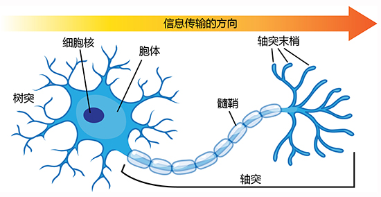
上图是一个神经元的示意图。神经元从树突接收输入信号，通过轴突传递输出信号。在神经元内部，输入信号被加权。如果加权和超过了一个阈值，神经元激活，输出信号；否则神经元不激活，不输出信号。
而感知机就是模拟这个过程。感知机接收输入信号，通过加权和激活函数输出信号。
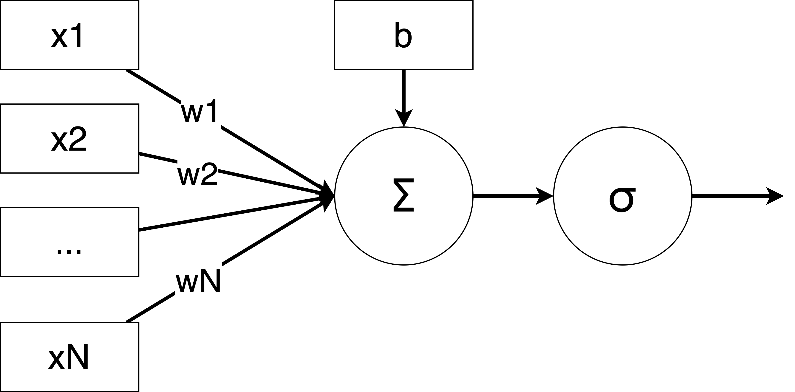
上图是一个感知机的示意图。感知机接收输入信号 ，通过加权 求和（再加上bias），然后通过激活函数 来决定是否有值输出。
定义
我们可以将感知机定义为：
而其中的 为激活函数，常用的有 Sigmoid 函数、ReLU 函数等。
不难发现，感知机的定义和逻辑回归的定义非常相似。实际上，逻辑回归就是一个特殊的感知机。
激活函数
激活函数决定了神经元的输出。在最初的神经元中，激活函数是一个阶跃函数，即：
如果输入信号的加权和大于 0，神经元激活，输出 1；否则神经元不激活，输出 0。
但是阶跃函数不连续，不可导，因此不适合在神经网络中使用。因此我们通常使用其他的激活函数。和逻辑回归不同的是，感知机的激活函数有很多可选项。常用的激活函数有：
TODO: 激活函数的图像
Sigmoid 函数：
ReLU 函数：
Leaky-ReLU 函数：
Tanh 函数：
优化
我们暂时不讨论关于感知机的优化问题，因为单个感知机的优化问题和逻辑回归的优化问题非常相似。我们将在之后章节讨论关于神经网络的优化问题。
总结
感知机是一个模拟神经元的模型，其自身可能不是一个很强大的模型，但是通过堆叠，组合，我们却可以构建出非常复杂的模型。
下一节我们将讨论多层感知机（MLP）。即通过堆叠多个感知机来构建一个更加复杂的模型。
多层感知机（MLP）aka FFNet
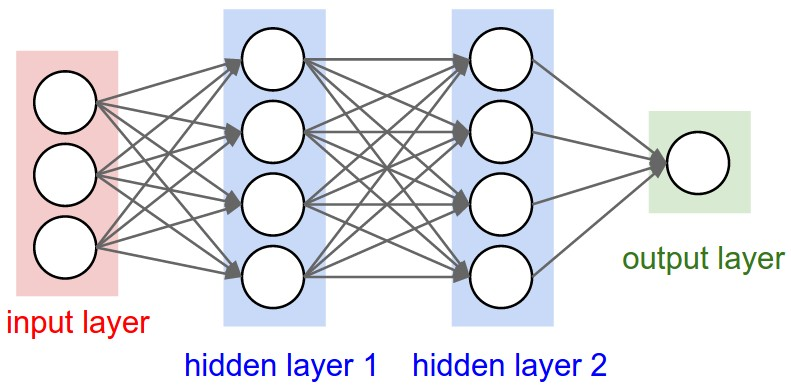
多层感知机（Multilayer Perceptron, MLP）又叫前馈神经网络（Feed-Forward Network, FFNet）是一个通过多个层组成的神经网络，每个层有多个神经元。其拥有输入层、隐藏层和输出层。每个神经元接收上一层的输出，通过加权和激活函数输出到下一层。如果这个网络拥有超过一层隐藏层，我们则称之为深度神经网络（Deep Neural Network, DNN）。
工作机制
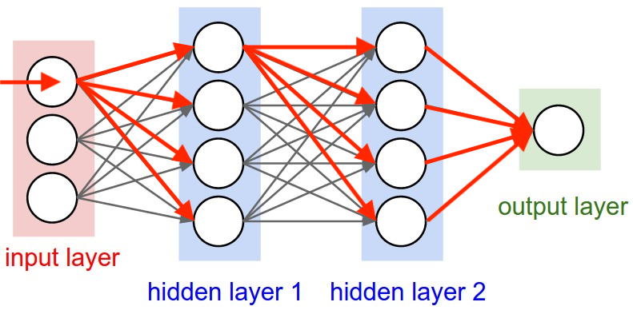
上图表示了输入层第一个元素向前传播（forward pass）的过程。输入层接收输入信号，通过加权和激活函数输出到隐藏层。隐藏层接收上一层的输出，通过加权和激活函数输出到下一层。输出层接收隐藏层的输出，通过加权和激活函数输出到输出层。
全连接层（FC Layer）
TODO
激活函数
优化
如果我们把原图中的输出当作预测值，最直觉的方法我们可以通过计算预测值和真实值的差距来优化网络。我们可以通过梯度下降来优化网络。
但是我们应该怎么样去求梯度变成了问题，我们可以通过反向传播（Backpropagation）来求解。反向传播是一种通过计算图的方式来求解梯度的方法。我们可以通过链式法则来求解梯度。我们将在下一章介绍。
计算图与反向传播
对模型数学层面求其解析导，对于更复杂的模型是难以实现的。例如MLP，如果我们有很多层，例如 100 层，手动求其导数是没可能的。因此我们需要一种自动求导的方法，这就是反向传播。
计算图
计算图（Computational Graph）是一种直观的表示模型的方法。我们可以通过计算图来表示模型的计算过程。
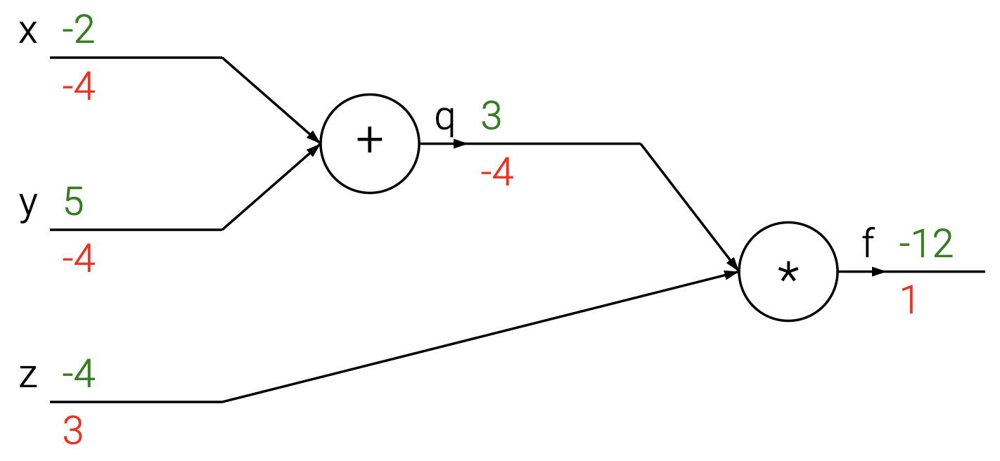 [https://cs231n.github.io/optimization-2/]
上图是一个简单的计算图。其中绿色数字表示正向计算用的数字，而红色则是反向传播的数字，我们将在后文讨论反向传播，现在我们将更关注正向计算的数字，即绿色的。计算图中的节点表示计算，边表示计算之间的依赖关系。图中最左侧的节点是输入节点，最右侧的节点是输出节点。其描述的运算是：
计算图将一组复杂的计算过程分解为一系列简单的计算过程，这样方便我们后面的求导。
尽管现在深度学习有很多框架，包括 PyTorch、Keras 等，但是这些框架所使用的自动求导的方法都是基于计算图并使用反向传播进行计算。
反向传播
在拥有了计算图后，我们仍然不能获得我们所需要的梯度。我们需要使用反向传播（Backpropagation）来计算梯度。
我们仍然考虑上图作为反向传播的例子。我们假设输出为 ，输入为 、 和 。我们需要计算 、 和 。对于输出 ，其依赖了 、、 、。我们需要计算 对于 、 和 、 的偏导。
我将以 为例来说明反向传播的过程。
考虑偏导的链式法则（chain rule）：
我们为了求 ，我们通过链式法则可以得：
下图是另一个计算 的计算图。以及其反向传播的过程。
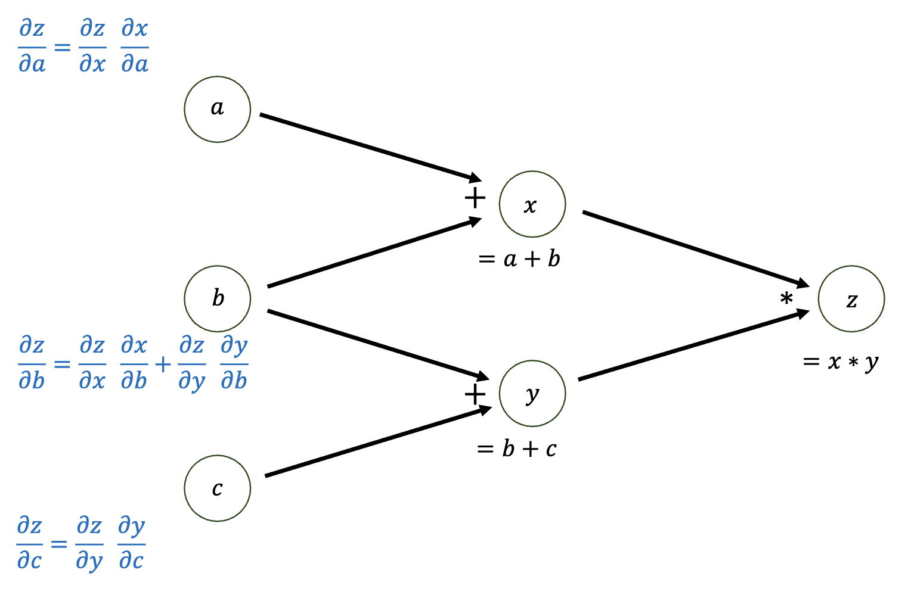
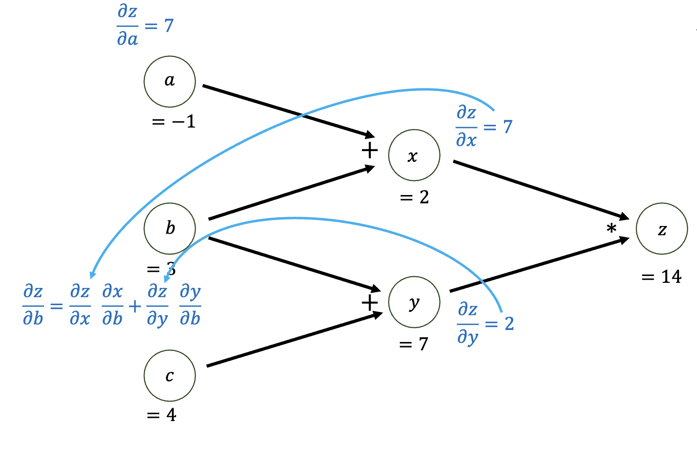
上图由于对于变量 对于目标 有两个依赖 和 ，即 和 。为了向后计算，我们对这两个分支分别对 使用链式法则，因并将两个梯度相加。即，我们可以把这个过程写为：
我们称上面的公式为多变量链式法则（Multivariable Chain Rule）。这个公式可以用来计算多个变量对于目标的梯度。
而对于下图的计算图，因为只有一个依赖则无所谓。
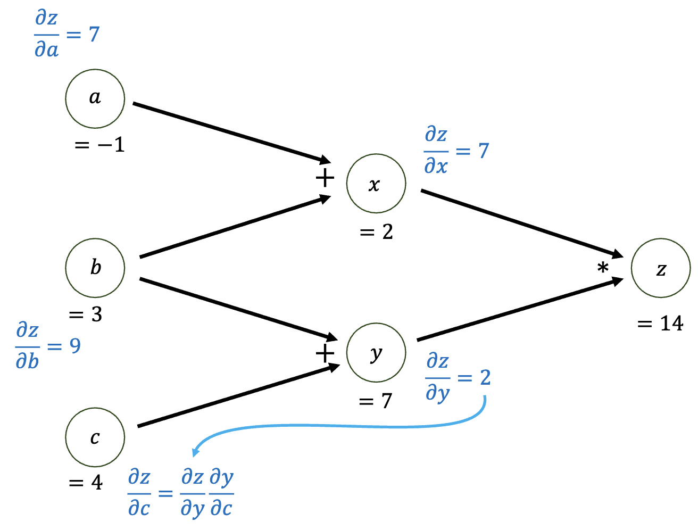 [COPYRIGHT]
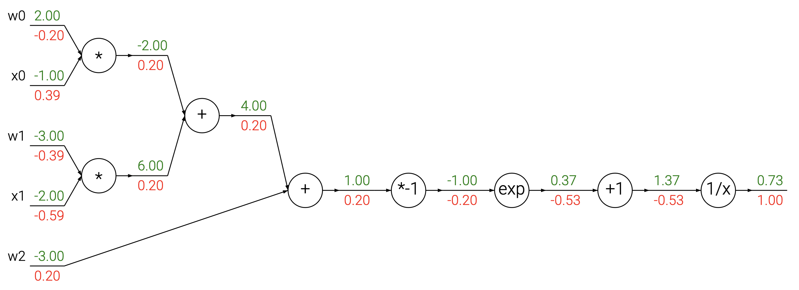 [https://cs231n.github.io/optimization-2/]
总结
通过上述简单的例子，我们可以看到反向传播的过程。我们可以通过计算图来表示模型的计算过程，然后通过链式法则来计算梯度。这样我们就可以通过计算图和反向传播来自动求解梯度。
而我们在反向传播会遇到两种不同的情况：
- 单变量依赖
- 多变量依赖
我们分别使用单变量链式法则和多变量链式法则来计算梯度:
| 单变量依赖 | 多变量依赖 |
|---|---|
自编码器（Autoencoder）
自编码器是一种非监督学习机器学习模型。
自编码器的目标是学习一个函数 ，使其能够将输入数据 映射到另一个维度 的空间中。而如果 ，则称为压缩自编码器（Undercomplete Autoencoder）；如果 ，则称为扩展自编码器（Overcomplete Autoencoder）。在这一节将关注压缩自编码器。
非监督学习
非监督学习是在说数据集将仅仅包含数据点而不包含其所对应的标签。即
其中 是一个数据点。而机器学习模型的目标是学习这个数据集实现任务。
模型结构
自编码器被定义为两部分：编码器（Encoder） 和解码器（Decoder） 。编码器将输入空间 映射到一个隐藏空间 ，而解码器将隐藏层 映射到输出数据 。即
其中 是编码器， 是编码器的参数； 是解码器， 是解码器的参数。

上图是一个简单的自编码器结构。紫色部分是编码器，蓝色部分是解码器。编码器将输入数据通过计算，最终得到隐藏层（橙色）的表示。而解码器将隐藏层的表示映射到输出数据。
损失函数
损失函数揭示了为什么自编码器是怎么进行无监督训练。自编码器的目标是最小化重构误差（Reconstruction Error）。
如果我们把整个模型看作映射 ，则这个函数可以被记为：
如果我们将编码层认为在压缩（从高维数据映射到低维数据），那么我们可以认为解码器是一个解压的过程，或者说在重建原始数据。如果我们的模型的重建数据 和原始数据 相似，那么我们可以认为模型是学习到了数据的特征，即我们期望 。
因此我们可以定义距离函数为：
因此可以使用均值平方差（MSE）定义损失函数：
而我们的目标是最小化这个损失函数。因此可以用梯度下降法来优化这个损失函数。即
BottleNeck 层
全局最优的情况是模型可以完美重建整个数据，即 。因此模型学到的单位函数（identity function）。
这种情况会发生在隐藏层的维度 大于等于输入层的维度 。因为这样模型可以学到一个单位函数，即 、。而这样的模型是没有意义的。其没有学到数据的特征，而只是记住所有的数据点。
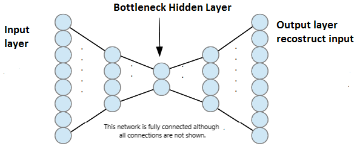 [https://discourse.opengenus.org/t/understand-autoencoders-by-implementing-in-tensorflow/3668]
这时候，我们需要引入一个 BottleNeck 层，即隐藏层的维度 小于输入层的维度 。模型在经过这个 BottleNeck 层时，由于维度降低，会丢失一些信息，这样模型就不可能学到单位函数。因此就能够学到数据的特征。
用数学标记，则为：
学习完后
当模型学习完后，我们可以使用编码器 来提取数据的特征。
但是由于自编码器是一个无监督学习模型，因此我们无法直接使用自编码器来进行其他任务（我们并不清楚隐藏层的特征是什么）。我们以二元分类任务为例，我们可以使用自编码器的隐藏层特征作为输入，然后训练一个监督学习的分类模型，例如 SVM 或逻辑回归，这个模型被定义为 。
需要注意的是自编码器并不适合进行生成数据。如果我们需要生成数据，我们通常需要从特征空间（或隐空间）中采样一些数据，并将数据放进解码器以生成。
而自编码器的隐藏层是一个固定的特征提取器，对于整个隐空间 （特征空间），其特征都是一个个点，而这些点相对于这个空间太过稀疏（Sparse），难以直接通过采样来生成数据。为了生成数据，我们可以使用变分自编码器或生成对抗网络。
生成对抗网络（GAN）
生成对抗网络（GAN）是一种生成模型，它由两个神经网络组成：生成器 和判别器 。生成器负责生成数据，判别器负责判断数据是否真实。生成器和判别器通过对抗训练的方式共同提升，最终生成器 可以生成逼真（以假乱真）的数据。
生成对抗网络的原理
判别器 （Discriminator）
我们将先关注辨别器，其的目标是判断输入的数据是真实数据还是生成器生成的数据。辨别器的输入是一个数据，输出是一个概率值，表示输入数据是真实数据的概率。即
其中我们认为 是辨别器的参数。
我们认为辨别器有两个目标：
- 尽可能的将真实数据判断为真实数据，我们需要最大化 。
- 而对于我们生成的数据，我们需要最小化 。
我们线关注目标1，当数据点为真时，即从数据集这个分布中采样点 ，最大化 （i.e. ）。因此我们可以最大化其对期望：
而对于目标 2，对于生成数据，我们需要最小化 。
我们可以将数据看作从生成器这个分布 中采样得到的，即 。而最小化 等价于最大化 ，即 。因此我们可以将目标 2 转化为：
我们组合两个目标函数，得到对于判别器最终的目标函数：
生成器 （Generator）
而对于生成器，我们的目标是让生成器生成的数据尽可能的逼真，即我们希望生成器生成的数据被判别器判断为真实数据。因此我们需要最大化 ，其中 是生成器的输入， 是生成器的参数。
生成器是从一些随机噪声中生成数据，因此我们可以认为生成器是从一个噪声分布 中采样得到的。因此我们可以认为生成器为：
考虑我们的目标，我们希望最大化 ，也就意味着最小化 我们因此可以写出生成器的目标函数：
结合形式
我们将两个目标函数一起看
对于生成器 :
而对于判别器 :
然后我们惊奇的发现，哇！判别器的目标函数的后半截和生成器的目标函数是一样的！除了针对不同参数进行优化，而更重要的是优化方向是反着的（一个是最大化，一个是最小化）（x）。
我们如果站在优化生成器的角度来看判别器的目标，因为在优化生成器的参数 时，判别器的参数 是固定的，固我们可以认为 是一个常数，如果我们令其为 ，那么我们可以将生成器的优化目标写为：
至此，我们发现生成器和判别器的目标函数是一样的，只是优化方向不同。因此我们可以将生成对抗网络的优化目标写为：
需要注意的是，我们会优先优化判别器，然后再优化生成器。因此 会被放在内侧，而 会被放在外侧，不可调换位置。
而优化这个目标是个 Min-max 游戏 :-)
对抗训练（Adversarial Training）
我们可以通过对抗训练的方式来优化生成对抗网络。对抗训练的过程是这样的：
- 我们首先固定生成器 的参数 ，优化判别器 的参数 ，使得判别器的目标函数最大化。
- 然后我们固定判别器 的参数 ，优化生成器 的参数 ，使得生成器的目标函数最小化。
- 重复步骤 1 和步骤 2 直到收敛。
用代码来说：
phi := initWeights() // 判别器的参数
theta := initWeights() // 生成器的参数
eta := 0.01 // 学习率
maxIter := 100 // 最大迭代次数
k := 5 // 训练判别器的次数
for (i := 0; i < maxIter; i++) {
// 优化判别器
for (j := 0; j < k; j++) {
X := sampleFrom(dataset)
Z := sampleFrom(noise)
X_G := G.generate(G, Z)
loss := D.loss(weight = phi,
realSample = X,
fakeSample = X_G)
grad_phi := D.gradient()
phi = phi - eta * grad_phi
}
// 优化生成器
Z := sampleFrom(noise)
loss := G.loss(weight = theta,
noise = Z)
grad_theta := G.gradient()
theta = theta - eta * grad_theta
}
实践中的差异
需要注意的是在实际训练中，我们会对目标函数进行一些调整。在优化目标中的后半项 。我们在发现最小化这一部分时候，其梯度会随着其值降低而梯度越来越陡：
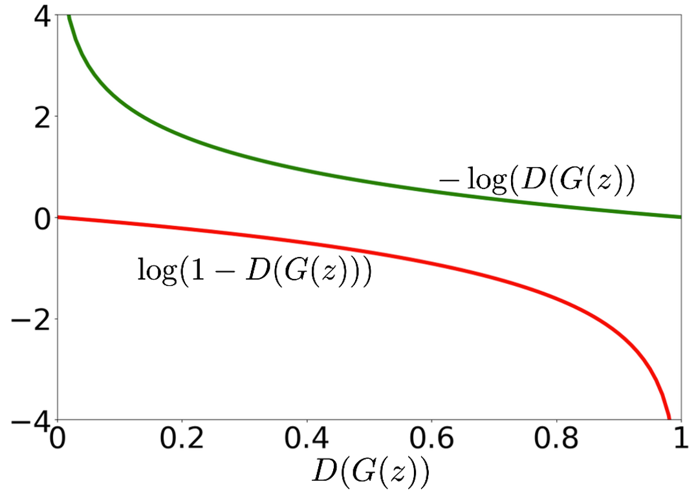 TODO: COPYRIGHT
而这和我们所期望是不一样的，我们希望在优化最开始更陡峭，而随着优化的进行，梯度逐渐变缓，这样我们的步长越来越短可以更好的收敛。
我们修改这一部分的目标函数为：，这样我们在最小化这一部分时，其梯度会随着离最优点越近，其值降低而梯度越来越缓。
这两个函数所优化的目标是一致的。
由于这个问题只涉及到最小化，因此我们只会修改生成器在优化时的目标函数，即 G.loss()，而不会修改判别器的目标函数。
何时停止
什么时候停止训练呢？我们可以通过三种方式来判断：
- 当我们的生成器生成的数据足够逼真时，我们可以停止训练。
- 我们达到对应的迭代次数时，我们可以停止训练。
- 或者我们已经达到最小的损失时，我们可以停止训练。
而在这将讨论低一点，我们怎么判断生成器生成的数据足够逼真呢？换句话说，我们怎么判断 呢？
已经有证明表明，在给定 时，如果辨别器 有无限能力，其最优结果为
而如果我们的生成器生成的数据足够逼真，那么我们可以认为 ，因此我们可以认为 。
因此如果辨别器达到此值，我们可以认为生成器生成的数据足够逼真。
信息论
自信息与熵
自信息（Self-Informaiton）
自信息是一个事件的信息量，用来衡量一个事件发生的意外程度。其是通过事件 的概率来定义的。当 越大，事件发生的概率越大，那么自信息越小，其信息量越小。因此我们可以直觉定义如下：
由于引入对数函数不会影响函数的单调性，因此我们可以引入对数函数来定义自信息。
更严谨的定义是：对于随机变量 ，其拥有概率质量函数（PMF） ，则其自信息定义为：
考虑 Logit，其定义用于表示一个事件发生的概率比，我们可以改写其公式：
熵（Entropy）
熵是用于衡量随机变量的不确定性（uncertainty）的度量。而不确定性我们可以认为是我们对低概率事件发生概率的期望。
换句话说，对于事件 ，如果发生我们低概率其发生的事件次数很多，则说明其越不确定。
因此我们可以认为熵是自信息的期望，即我们可以将熵定义为：
对于随机离散变量 ，其值域为 ，其概率密度函数为 ，则其熵定义为：
对于连续变量，我们会使用不同公式。具体请参照 Wikipedia。
联合熵、条件熵、散度与互信息
联合熵（Joint Entropy）
联合熵是衡量一组（两个）随机变量的不确定性。
对于两个离散随机变量 和 ，其联合熵定义为：
其中 为 和 的联合概率密度函数。
上述公式的计算是通过将 和 的所有可能取值组成的信息熵的期望值。
条件熵（Conditional Entropy）
条件熵量化一个随机变量 的结果与另一个随机变量 的结果之间的不确定性
对于离散随机变量 和 ，其条件熵定义为：
其中 为 在给定 的情况下的概率密度函数。
考虑是随机变量，因此有 Naive Bayes：
如果做更多改写，则有：
因此我们可以得出
通过类似运算，我们可以获得如下韦恩图：
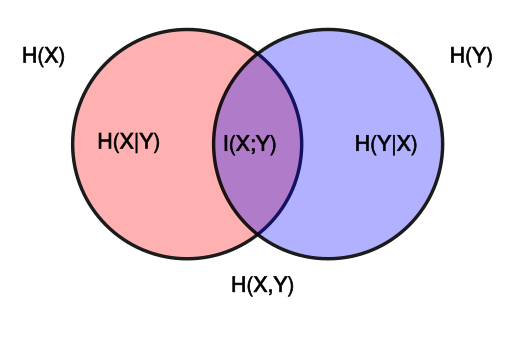 [https://commons.wikimedia.org/w/index.php?curid=11245361]
相对熵（Relative Entropy）
相对熵又叫 KL 散度，是衡量两个概率分布之间的差异性（或者说距离）。
我们假定两个相对于离散随机变量 的概率分布 , 。对于这两个概率分布，每一个概率都有 和 ，且 和 。
其相对熵定义为：
考虑是对两个概率比值的期望值，因此有：
当且仅当两个概率密度相等时，相对熵为 0。
需要注意的是由于过程中是 和 的比值，且存在 函数，因此相对熵不是对称的。即
而为了解决不对称的问题，我们可以使用 JSD 散度：
其中 。这一节将不会详细讨论 JSD 散度。
互信息（Mutual Information）
衡量 X 和 Y 共享的信息量
对于随机变量 和 ，其互信息定义为：
考虑 KL 散度的定义：
如果我们将 替换为 ， 替换为 则有：
因此我们可以认为互信息是 和 之间的距离。因此如果 和 相互独立，，则互信息为 0。即：
互信息也可以通过条件熵来表示：
考虑 Naive Bayes：
因此我们获得了
因此我们可以通过多种方式表达互信息：
[https://commons.wikimedia.org/w/index.php?curid=11245361]
互信息的一些性质包括：
- 非负性：
- 对称性：
- 衡量依赖于 和
- 当且仅当 和 相互独立（记为 ），
- 不仅随 和 的依赖性而增加，而且随 和 的依赖性而增加
序列模型
循环神经网络 RNN
考虑我们输入的是一个序列信息，而序列信息的特性是不定长度，除了我们将模型输入层拉长到非常长去覆盖所有可能的长度，我们还可以使用循环神经网络（Recurrent Neural Network, RNN）来处理这种序列信息。
模型
RNN 是一种特殊的神经网络，它的特点是在网络中引入了循环结构，使得网络可以保持一定的记忆。在 RNN 中，我们可以将隐藏层的输出 作为下一个时间步的输入的一部分，这样就可以将序列信息传递下去。
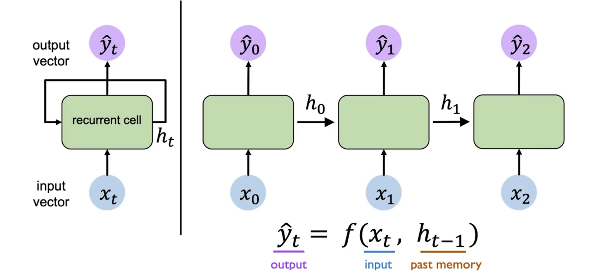
上图是 RNN 模型的示意图。左侧是简略图，右侧则为其展开后的结构。
我们关注其中任意一个时间步 的计算过程：
其先接受输入 ，然后结合上一个时间步的隐藏层输出 ，计算出当前时间步的隐藏层输出 。而输出 也是根据 和 计算得到的。重复执行这个操作，我们就可以处理整个序列的信息。
对于第一个时间步，由于其没有上一个时间步的 ，我们可以初始化一个全零的隐藏层输出 ，或者使用一个特殊的向量来初始化。
用数学公式表示，RNN 在时间步 的计算过程如下：
其中 和 是两个函数，分别表示隐藏层和输出层的计算过程。我们可以将其展开为更具体的形式：
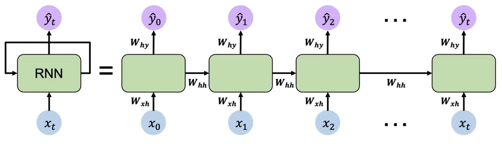
需要注意的是，RNN 的参数 、 和 在所有时间步都是共享的。因此其实 RNN 只有 3 个权重矩阵，而不是每个时间步都有一个独立的权重矩阵。
训练
RNN 的训练过程与普通的神经网络类似，我们可以使用梯度下降法来更新参数。但是由于 RNN 的循环结构，我们需要使用反向传播算法的变种——BPTT（Backpropagation Through Time）来计算梯度。
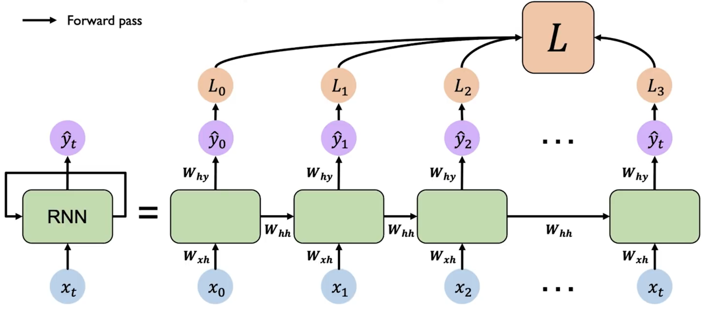
每一个时刻 都会产生一个 loss ，我们需要将所有时刻的 loss 求和 ，然后从最后一个时间步开始，沿着展开的网络反向传播误差。在每个时间步，根据链式法则计算损失对参数的梯度。由于参数共享，需要将每个时间步的梯度累加起来，得到最终的梯度。
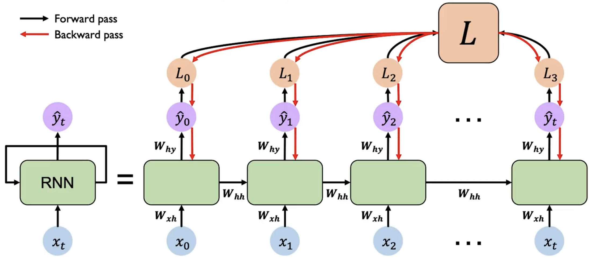
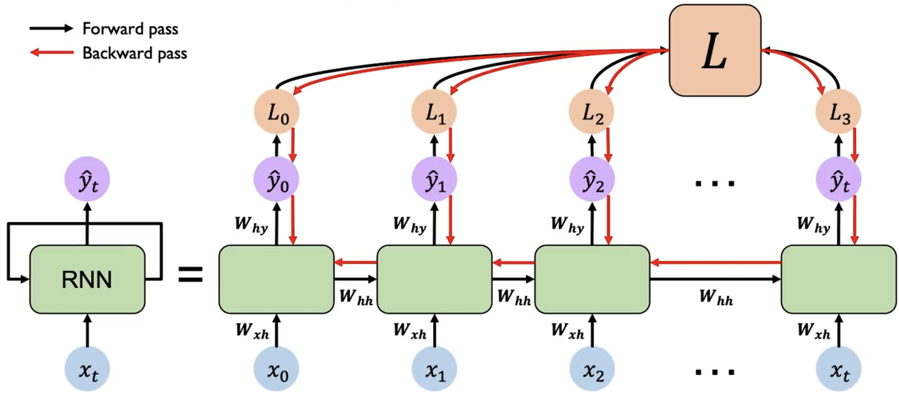
而由于 RNN 的循环结构，在反向传播过程中，对于 计算梯度时，导致很多梯度会相乘，从而导致梯度可能会指数级地减小（消失）或增大（爆炸）。这会导致学习困难，尤其是对于长序列。
如果梯度很多都 ，则会导致梯度爆炸（考虑 ），我们可以通过梯度裁剪（Gradient Clipping）来解决这个问题。即当梯度的范数超过一个阈值时，将梯度缩放到一个较小的范围。
如果梯度很多都 ，则会导致梯度消失，这个问题比较难解决，我们通常会使用
- 更换激活函数，如 ReLU
- 魔法权重初始化
- 使用 LSTM 或 GRU 等更复杂的结构（后续会介绍）
对于更换激活函数，我们可以使用 ReLU 来代替 tanh 函数，这样可以减缓梯度消失的问题。因为梯度消失是由于 tanh 函数的性质导致的，当输入很大或很小时，梯度会接近于 0。而 ReLU 函数在输入大于 0 时梯度为 1，可以减缓梯度消失的问题。
而权重初始化则是经验行为，使用单位矩阵作为初始权重，并令所有的bias为0，可以减缓梯度消失的问题。
长短时记忆网络 LSTM
LSTM（Long Short-Term Memory）网络是一种特殊的 RNN，它的设计是为了解决 RNN 中的梯度消失和梯度爆炸问题，其还能优化长期依赖的问题。
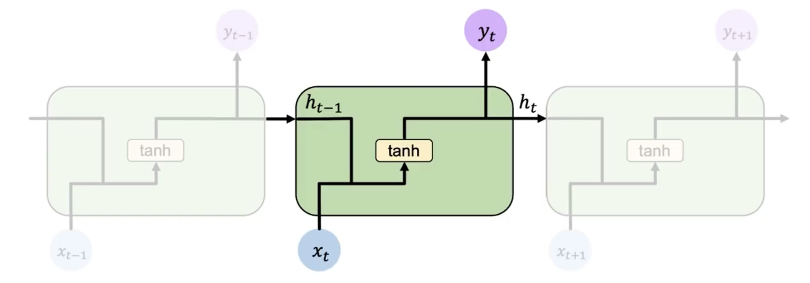 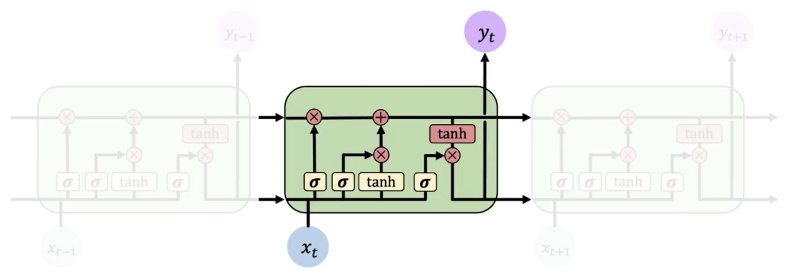
上面两张图分别是 RNN 和 LSTM 的示意图，可以看到 LSTM 的结构更加复杂，引入了更多的元素来控制信息的流动。而更重要的是，其比 RNN 多了一整条信息流（横向）。
模型
LSTM 的结构如下图所示：
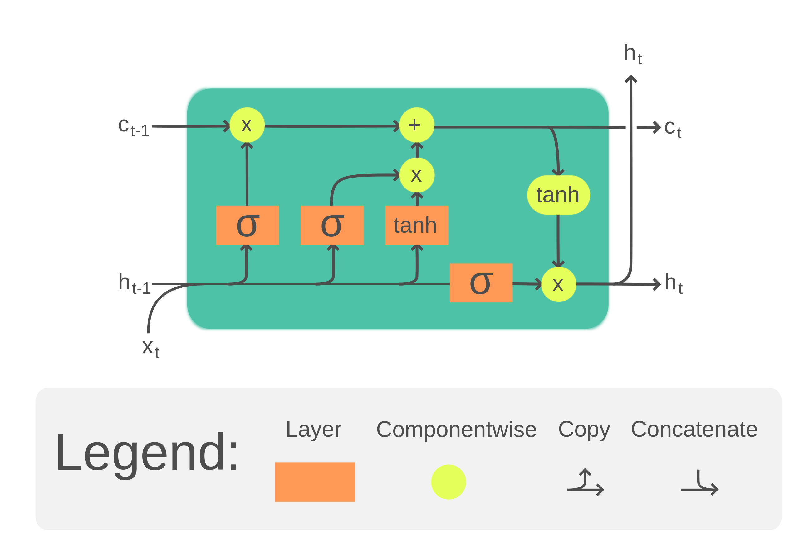
相比于 RNN 只使用 用于保存信息流，LSTM 新增了一个 来保存长期信息。
LSTM 的计算总结来说有 4 个不同的状态：遗忘，存储，更新和输出。
遗忘门 Forget Gate
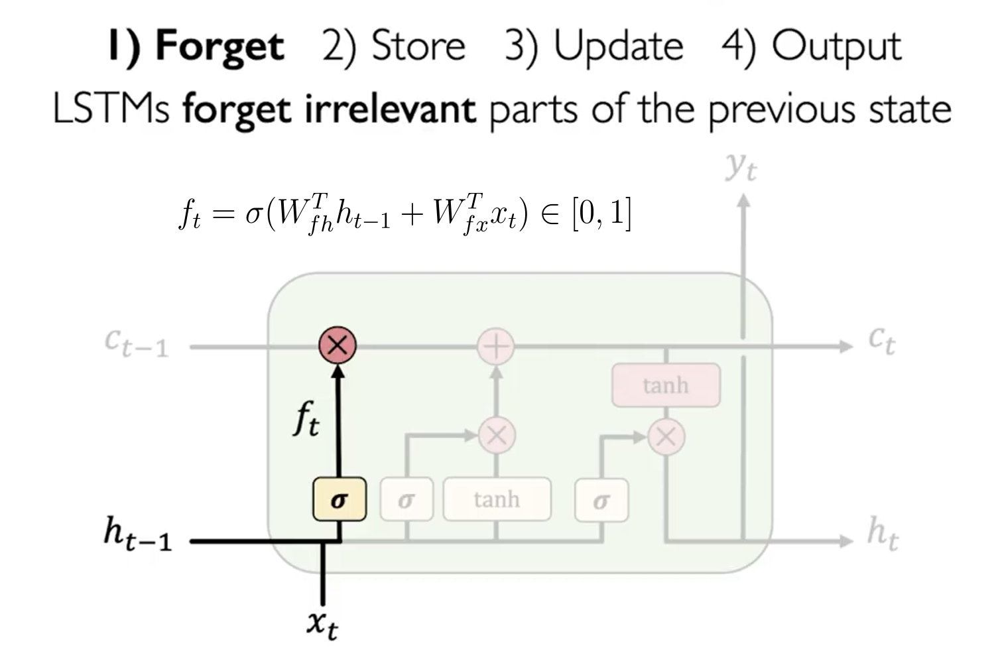
其是为了计算长期记忆 保留多少信息。其计算公式如下：
这个公式的意义是，我们需要计算一个遗忘门 ，其值在 0 到 1 之间，用于控制 保留多少信息。当 接近 0 时，表示忘记所有信息；当 接近 1 时，表示保留所有信息。
记忆门 Store Gate
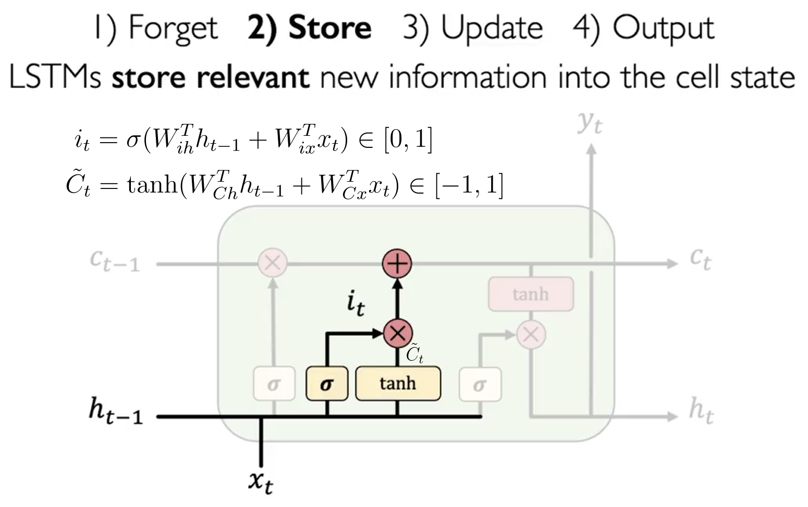
这一步，LSTM 将计算有多少比例的新信息 要被加入到长期记忆中 。其计算公式如下：
更新 Update
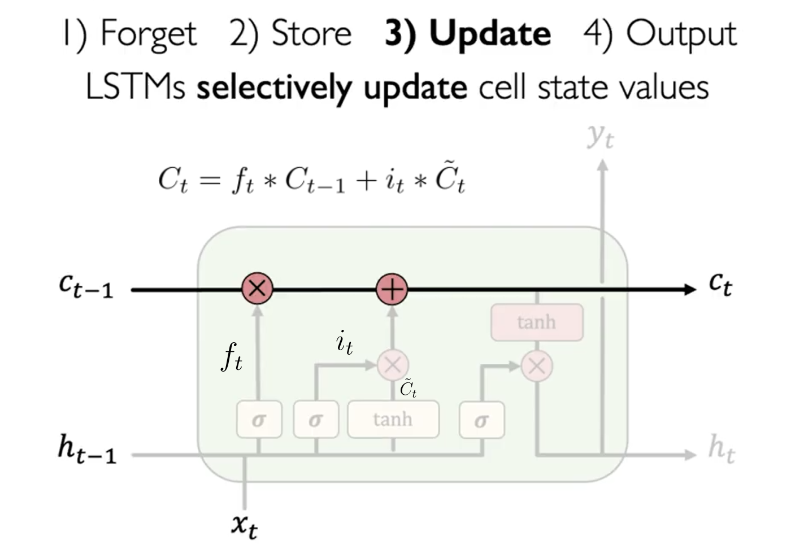
这一步，LSTM 将计算新的长期记忆 。其计算公式如下：
其中 是遗忘门（记忆比例）， 是存储门（存储比例）， 是新的信息。
输出门 Output Gate
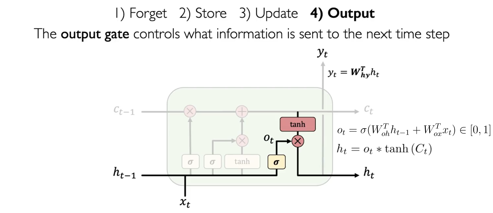
输出门 控制着输出 的信息量。其计算公式如下：
和 RNN 类似， 输出为：
训练
LSTM 的训练过程与 RNN 类似，我们可以使用梯度下降法来更新参数。使用 BPTT 算法来计算梯度。LSTM尽管引入了很多新的元素，但这并不影响最终的梯度是连续的，因此我们可以使用梯度下降法来更新参数。
凸函数（Convex）
定义

[https://en.wikipedia.org/wiki/Convex_function#/media/File:ConvexFunction.svg]
对于所有在 定义域内的 且 ，有：
则函数 是凸函数。
而如果在此基础上，当 时，有： 则函数 是严格的凸（strictly convex）函数。
其很好理解，左侧表示函数（图中黑线）在 区域的值，右侧表示线段的线性插值（图中玫红色值）。凸函数的定义即为：在 区域，函数上的值不会超过线性插值。
 [Prof. Leandro L. Minku's slides]
[Prof. Leandro L. Minku's slides]
凸函数有一个很有用的性质：凸函数的局部最小值也是全局最小值。
并且如果函数是严格凸的，那么局部最小值是唯一的。
而对于凹函数，只需要将不等号反过来即可。即：
1 阶导

函数 是凸函数，当且仅当对于其定义域 为凸集且所有 满足：
2 阶导
函数 是凸函数，当且仅当 是凸集并且其 （海森矩阵）对于任何 是半正定的（Positive Semidefinite, PSD）
如果（不是iff） 是凸集并且其 对于任何 是正定（Positive Definite, PD）的，则 为严格凸函数。
单变量场景

| 凸函数 | 凹函数 |
|---|---|
| 函数是凸的 | 函数是凹的 |
| 是凸的 是凹的 | 是凹的 是凸的 |
| 是严格凸的 | 是严格凹的 |
| 的局部最小值 | 是 的局部最大值 |
多变量场景
函数是凸的 iff 不再适用。
函数是凸的 iff （半正定，PSD）
半正定被定义为：
对称（symmetric）方阵（ ） 是半正定的，当且仅当：
需要注意的是，如果一个 全为正数，也可能不是PSD。存在负数也不代表不能为 PSD。
6.2 梯度下降的变种
梯度下降被定义为
经典梯度下降通过对数据集所有数据进行遍历，计算梯度并更新参数。即对于整个数据集 的期望，即其：
这种做法在数据集很大的情况下，一次更新需要非常大量的计算。因此，有很多变种的梯度下降算法被提出，以减少计算量。
随机梯度下降（SGD）
随机梯度下降（Stochastic Gradient Descent, SGD）是梯度下降的一种变种。在每次迭代中，随机梯度下降只使用一个样本来计算梯度。这样，每次迭代的计算量大大减少。但是由于只使用一个样本，所以每次下降可能不一定总是指向最优方向。因此，SGD的收敛速度可能会变慢。
我们定义梯度的为：
其中 是从数据集中随机抽取的一个样本。
小批量梯度下降（Mini-batch Gradient Descent）
SGD 因为每次只有一个样本，所以训练抖动很大。而传统梯度下降因为每次都要计算整个数据集，所以计算量很大。我们提出一个折中的方案：小批量梯度下降（Mini-batch Gradient Descent）。即每次迭代使用一个小批量的样本来计算梯度。这样，每次迭代的计算量虽然比SGD要大，但比传统梯度下降要小。而且小批量梯度下降的收敛速度通常比SGD要快。
我们定义每次采样 个样本作为一个batch ，梯度为因此被定义为：
有两种方式从数据集中采样：
- replacement：在取出数据点后放回，即可以重复取
- without replacement：在取出数据点后不放回
通常来说
学习理论
为什么机器学习能成功？